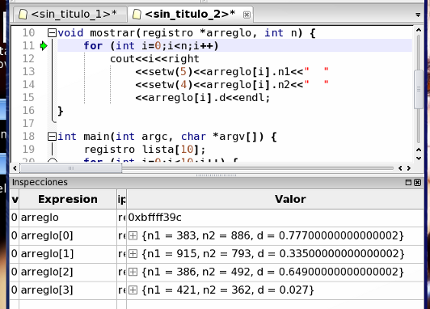

|
Parte 3: Paso 4
|
0
1
2
3
4
|
Finalmente, presione F6 para ingresar en la función mostrar y una vez dentro ingrese la inspección arreglo. Observe que en este caso no vemos los elementos, sino una dirección de memoria (la del primer elemento, donde comienza el arreglo). Esto se debe a que dentro de la función, es imposible saber el tamaño del arreglo a partir del mismo (por eso necesitamos el parámetro cant). Sin embargo, aún puede mostrar sus elementos ya sea como inspecciones o en tabla separada con cualquiera de los métodos descriptos anteriormente.

Volver... Más tutoriales...